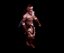
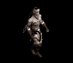
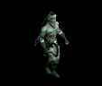
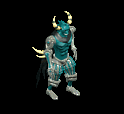
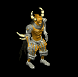
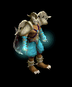
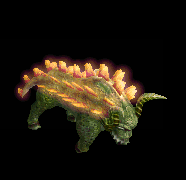
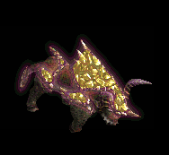

鞭 をドロップするmob一覧
一覧ページへ
| エンバームド | アンデット | 一般4 | |||||||
|---|---|---|---|---|---|---|---|---|---|
 | 槍(300) | 鞭(200) | 状態異常回復1(300) | 腰(170) | 手首(150) | 能力向上2(120) | 箒(300) | ||
| マミーキング | アンデット | ボス1 | |||||||
 | 槍(470) | 鞭(310) | 状態異常回復1(470) | 腰(260) | 手首(240) | 能力向上2(190) | 箒(470) | ||
| ヴァンパイア | アンデット | 一般3 | |||||||
 | 鞭(360) | 牙(240) | イベント(360) | 職業鎧(200) | 指輪(180) | 特殊1(140) | 双剣(240) | ||
| 上級ヴァンパイア | アンデット | セミ1 | |||||||
 | 鞭(390) | 笛(260) | イベント(390) | 職業鎧(220) | 指輪(200) | 特殊1(160) | |||
| 古代ヴァンパイア | アンデット | セミ2 | |||||||
 | 鞭(420) | 牙(280) | 弾(420) | 職業鎧(230) | 指輪(210) | 特殊1(170) | 双剣(280) | ||
| ドラキュラ | アンデット | ボス1 | |||||||
 | 鞭(470) | 笛(310) | CP回復(470) | 職業鎧(260) | 指輪(240) | 特殊1(190) | |||
| ノースフェラトゥ | アンデット | ボス2 | |||||||
 | 鞭(490) | 牙(330) | HP回復(490) | 職業鎧(270) | 指輪(250) | 特殊1(200) | 双剣(330) | ||
| ダークサマナー | 人間 | 一般2 | |||||||
|  | 鞭(380) | 投擲(250) | 弾(380) | 腰(210) | イヤリング(190) | 肩刺青(110) | |||
| レッドアイ所員 | 人間 | 一般3 | |||||||
 | 鞭(360) | 投擲(240) | 弾(360) | 腰(200) | イヤリング(180) | 肩刺青(120) | |||
| デビルスカラー | 人間 | 一般4 | |||||||
|  | 鞭(300) | 牙(200) | CP回復(300) | 腰(170) | イヤリング(150) | 肩刺青(130) | 双剣(200) | ||
| 降神術師 | 人間 | セミ2 | |||||||
 | 鞭(420) | スリング(280) | 弾(420) | 腰(230) | イヤリング(210) | 肩刺青(140) | |||
| 堕落予言者 | 人間 | ボス1 | |||||||
|  | 鞭(470) | 投擲(310) | CP回復(470) | 腰(260) | イヤリング(240) | 肩刺青(150) | |||
| レッドアイ幹部 | 人間 | セミ1 | |||||||
 | ステッキ(390) | 鞭(260) | CP回復(390) | マント(220) | 冠(200) | ブローチ(190) | |||
| ピエンド | 悪魔 | 一般1 | |||||||
 | 鞭(410) | 杖(270) | 状態異常回復1(410) | 腰(230) | 指輪(210) | 十字架(180) | 本(270) | ||
| レッサーデーモン | 悪魔 | 一般2 | |||||||
|  | 鞭(380) | 牙(250) | 矢(380) | マント(210) | 指輪(190) | 十字架(190) | 双剣(250) | 魔弾(380) | |
| デーモン | 悪魔 | セミ2 | |||||||
 | 鞭(420) | 杖(280) | CP回復(420) | 腰(230) | 指輪(210) | 十字架(200) | 本(280) | ||
| デビル | 悪魔 | セミ3 | |||||||
|  | 鞭(450) | 牙(300) | 矢(450) | マント(250) | 指輪(230) | 十字架(210) | 双剣(300) | 魔弾(450) | |
| サタン | 悪魔 | ボス2 | |||||||
 | 鞭(490) | 杖(330) | 状態異常回復1(490) | 腰(270) | 指輪(250) | 十字架(220) | 本(330) | ||
| ウェアーゴート | 悪魔 | 一般3 | |||||||
 | 鞭(360) | 翼(240) | 鍵(20) | グローブ(200) | 指輪(180) | 宝石(140) | 水晶(240) | ||
| バフォメット | 悪魔 | ボス3 | |||||||
 | 槍(510) | 鞭(340) | CP回復(510) | 足(280) | 槍投擲機(260) | 特殊1(200) | 箒(510) | ||
| 飛海月 | 動物 | 一般1 | |||||||
 | 鞭(410) | スリング(270) | 弾(410) | 腰(230) | 手首(210) | 帰還(160) | |||
| エアスライム | 動物 | 一般2 | |||||||
 | 鞭(380) | スリング(250) | 弾(380) | 腰(210) | イヤリング(190) | 特殊1(150) | |||
| アクアスライム | 動物 | 一般3 | |||||||
 | 鞭(360) | スリング(240) | 弾(360) | 腰(200) | 手首(180) | 帰還(140) | |||
| 水晶烏賊 | 動物 | セミ1 | |||||||
 | 鞭(390) | スリング(260) | 弾(390) | 腰(220) | 手首(200) | 能力向上2(160) | |||
| クラーケン | 動物 | ボス1 | |||||||
 | 鞭(470) | スリング(310) | 弾(470) | 腰(260) | 手首(240) | 帰還(190) | |||
| レッドアイ警備犬 | 動物 | セミ1 | |||||||
 | 牙(390) | 鞭(260) | 鍵(30) | 職業鎧(220) | 槍投擲機(200) | 特殊1(160) | 双剣(390) | ||
| 巨大モグラ | 動物 | 一般4 | |||||||
 | 鞭(300) | 杖(200) | 状態異常回復2(80) | グローブ(170) | 指輪(150) | 能力向上1(120) | 本(200) | ||
| マインスィーパ | 動物 | セミ2 | |||||||
 | 鞭(420) | 杖(280) | 弾(420) | グローブ(230) | 指輪(210) | 能力向上1(170) | 本(280) | ||
| ブラックベアー | 動物 | 一般3 | |||||||
 | 牙(360) | 鞭(240) | 状態異常回復1(360) | グローブ(200) | 爪(180) | 宝石(140) | 双剣(360) | ||
| ポーラーベアー | 動物 | セミ1 | |||||||
 | 両手剣(390) | 鞭(260) | 状態異常回復2(100) | 鎧(220) | イヤリング(200) | 宝石(160) | 鎌(390) | ||
| ガーゴイル | 神獣 | 一般1 | |||||||
 | 水晶(270) | 鞭(410) | 翼(270) | ||||||
| マーブルガゴイル | 神獣 | 一般4 | |||||||
 | 水晶(200) | 鞭(300) | 翼(200) | ||||||
| エボニーガゴイル | 神獣 | セミ1 | |||||||
 | 水晶(260) | 鞭(390) | 翼(260) | ||||||
| オニキスガゴイル | 神獣 | セミ2 | |||||||
 | 水晶(280) | 鞭(420) | 翼(280) | ||||||
| オデロンガゴイル | 神獣 | ボス2 | |||||||
 | 鞭(490) | 投擲(330) | |||||||
| トランクマン | 神獣 | 一般3 | |||||||
 | 杖(360) | 鞭(240) | 本(360) | ||||||
| グリムジョーカー | 神獣 | 一般1 | |||||||
 | 箒(100) | 槍(100) | 鞭(270) | ||||||
| エンバームドEx | アンデット | 一般4 | |||||||
| 槍(300) | 鞭(200) | 状態異常回復1(300) | 腰(170) | 手首(150) | 能力向上2(120) | 箒(300) | ||
| マミーキングEx | アンデット | ボス1 | |||||||
| 槍(1200) | 鞭(800) | 状態異常回復1(1200) | 腰(670) | 手首(600) | 能力向上2(480) | 箒(1200) | ||
| ヴァンパイアEx | アンデット | 一般3 | |||||||
| 鞭(360) | 牙(240) | イベント(360) | 職業鎧(200) | 指輪(180) | ブローチ(200) | 双剣(240) | ||
| 上級ヴァンパイアEx | アンデット | セミ1 | |||||||
| 鞭(450) | 笛(300) | イベント(450) | 職業鎧(250) | 指輪(230) | ブローチ(250) | |||
| 古代ヴァンパイアEx | アンデット | セミ2 | |||||||
| 鞭(650) | 牙(430) | 弾(650) | 職業鎧(360) | 指輪(330) | ブローチ(300) | 双剣(430) | ||
| ドラキュラEx | アンデット | ボス1 | |||||||
| 鞭(1200) | 笛(800) | CP回復(1200) | 職業鎧(670) | 指輪(600) | ブローチ(400) | |||
| ノースフェラトゥEx | アンデット | ボス2 | |||||||
| 鞭(2000) | 牙(1330) | HP回復(2000) | 職業鎧(1110) | 指輪(1000) | ブローチ(500) | 双剣(1330) | ||
| ダークサマナーEx | 人間 | 一般2 | |||||||
| 鞭(380) | 投擲(250) | 弾(380) | 腰(210) | イヤリング(190) | 肩刺青(110) | ||||
| レッドアイ所員Ex | 人間 | 一般3 | |||||||
| 鞭(360) | 投擲(240) | 弾(360) | 腰(200) | イヤリング(180) | 肩刺青(120) | |||
| デビルスカラーEx | 人間 | 一般4 | |||||||
| 鞭(300) | 牙(200) | CP回復(300) | 腰(170) | イヤリング(150) | 肩刺青(130) | 双剣(200) | |||
| 降神術師Ex | 人間 | セミ2 | |||||||
| 鞭(650) | スリング(430) | 弾(650) | 腰(360) | イヤリング(330) | 肩刺青(140) | |||
| 堕落予言者Ex | 人間 | ボス1 | |||||||
| 鞭(1200) | 投擲(800) | CP回復(1200) | 腰(670) | イヤリング(600) | 肩刺青(150) | ||||
| レッドアイ幹部Ex | 人間 | セミ1 | |||||||
| ステッキ(450) | 鞭(300) | CP回復(450) | マント(250) | 冠(230) | ブローチ(190) | |||
| ピエンドEx | 悪魔 | 一般1 | |||||||
| 鞭(410) | 杖(270) | 状態異常回復1(410) | 腰(230) | 指輪(210) | 十字架(180) | 本(270) | ||
| レッサーデーモンEx | 悪魔 | 一般2 | |||||||
| 鞭(380) | 牙(250) | 矢(380) | マント(210) | 指輪(190) | 十字架(190) | 双剣(250) | 魔弾(380) | ||
| デーモンEx | 悪魔 | セミ2 | |||||||
| 鞭(650) | 杖(430) | CP回復(650) | 腰(360) | 指輪(330) | 十字架(200) | 本(430) | ||
| デビルEx | 悪魔 | セミ3 | |||||||
| 鞭(800) | 牙(530) | 矢(800) | マント(440) | 指輪(400) | 十字架(210) | 双剣(530) | 魔弾(800) | ||
| サタンEx | 悪魔 | ボス2 | |||||||
| 鞭(2000) | 杖(1330) | 状態異常回復1(2000) | 腰(1110) | 指輪(1000) | 十字架(220) | 本(1330) | ||
| ウェアーゴートEx | 悪魔 | 一般3 | |||||||
| 鞭(360) | 翼(240) | 鍵(40) | グローブ(200) | 指輪(180) | 宝石(140) | 水晶(240) | ||
| バフォメットEx | 悪魔 | ボス3 | |||||||
| 槍(2800) | 鞭(1870) | CP回復(2800) | 足(1560) | 槍投擲機(1400) | 特殊1(1120) | 箒(2800) | ||
| 飛海月Ex | 動物 | 一般1 | |||||||
| 鞭(410) | スリング(270) | 弾(410) | 腰(230) | 手首(210) | 帰還(160) | |||
| エアスライムEx | 動物 | 一般2 | |||||||
| 鞭(380) | スリング(250) | 弾(380) | 腰(210) | イヤリング(190) | 特殊1(150) | |||
| アクアスライムEx | 動物 | 一般3 | |||||||
| 鞭(360) | スリング(240) | 弾(360) | 腰(200) | 手首(180) | 帰還(140) | |||
| 水晶烏賊Ex | 動物 | セミ1 | |||||||
| 鞭(450) | スリング(300) | 弾(450) | 腰(250) | 手首(230) | 能力向上2(180) | |||
| クラーケンEx | 動物 | ボス1 | |||||||
| 鞭(1200) | スリング(800) | 弾(1200) | 腰(670) | 手首(600) | 帰還(480) | |||
| レッドアイ警備犬Ex | 動物 | セミ1 | |||||||
| 牙(450) | 鞭(300) | 鍵(60) | 職業鎧(250) | 槍投擲機(230) | 特殊1(180) | 双剣(450) | ||
| 巨大モグラEx | 動物 | 一般4 | |||||||
| 鞭(300) | 杖(200) | 状態異常回復2(80) | グローブ(170) | 指輪(150) | 能力向上1(120) | 本(200) | ||
| マインスィーパEx | 動物 | セミ2 | |||||||
| 鞭(650) | 杖(430) | 弾(650) | グローブ(360) | 指輪(330) | 能力向上1(260) | 本(430) | ||
| ブラックベアーEx | 動物 | 一般3 | |||||||
| 牙(360) | 鞭(240) | 状態異常回復1(360) | グローブ(200) | 爪(180) | 宝石(140) | 双剣(360) | ||
| 北極熊Ex | 動物 | セミ1 | |||||||
| 両手剣(450) | 鞭(300) | 状態異常回復2(110) | 鎧(250) | イヤリング(230) | 宝石(180) | 鎌(450) | ||
| ガーゴイルEx | 神獣 | 一般1 | |||||||
| 鞭(410) | 翼(270) | 鍵(10) | 兜・帽子(230) | 爪(210) | 能力向上1(160) | 水晶(270) | ||
| マーブルガゴイルEx | 神獣 | 一般4 | |||||||
| 鞭(300) | 翼(200) | 鍵(10) | 兜・帽子(170) | 爪(150) | 能力向上1(120) | 水晶(200) | ||
| エボニーガゴイルEx | 神獣 | セミ1 | |||||||
| 鞭(450) | 翼(300) | 鍵(20) | 兜・帽子(250) | 爪(230) | 能力向上1(180) | 水晶(300) | ||
| オニキスガゴイルEx | 神獣 | セミ2 | |||||||
| 鞭(650) | 翼(430) | 鍵(40) | 兜・帽子(360) | 爪(330) | 能力向上1(260) | 水晶(430) | ||
| オデロンガゴイルEx | 神獣 | ボス2 | |||||||
| 鞭(2000) | 投擲(1330) | 鍵(60) | 兜・帽子(1110) | 爪(1000) | 能力向上1(800) | |||
| トランクマンEx | 神獣 | 一般3 | |||||||
| 杖(360) | 鞭(240) | イベント(360) | 腰(200) | 指輪(180) | 能力向上1(140) | 本(360) | ||
| グリムジョーカーEx | 神獣 | 一般1 | |||||||
| 槍(410) | 鞭(270) | 盾(410) | 鎧(230) | 指輪(210) | 特殊1(160) | 箒(410) | ||
| エンバームドZin | アンデット | 一般4 | |||||||
| 槍(1200) | 鞭(800) | 状態異常回復1(1200) | 腰(670) | 手首(600) | 能力向上2(480) | 箒(1200) | ||
| マミーキングZin | アンデット | ボス1 | |||||||
| 槍(1000) | 鞭(670) | 状態異常回復1(1000) | 腰(560) | 手首(500) | 能力向上2(400) | 箒(1000) | ||
| ヴァンパイアZin | アンデット | 一般3 | |||||||
| 鞭(1560) | 牙(1040) | イベント(1560) | 職業鎧(870) | 指輪(780) | ブローチ(200) | 双剣(1040) | ||
| 上級ヴァンパイアZin | アンデット | セミ1 | |||||||
| 鞭(650) | 笛(430) | イベント(650) | 職業鎧(360) | 指輪(330) | ブローチ(250) | |||
| 古代ヴァンパイアZin | アンデット | セミ2 | |||||||
| 鞭(750) | 牙(500) | 弾(750) | 職業鎧(420) | 指輪(380) | ブローチ(300) | 双剣(500) | ||
| ドラキュラZin | アンデット | ボス1 | |||||||
| 鞭(1000) | 笛(670) | CP回復(1000) | 職業鎧(560) | 指輪(500) | ブローチ(400) | |||
| ノースフェラトゥZin | アンデット | ボス2 | |||||||
| 鞭(1100) | 牙(730) | HP回復(1100) | 職業鎧(610) | 指輪(550) | ブローチ(500) | 双剣(730) | ||
| ダークサマナーZin | 人間 | 一般2 | |||||||
| 鞭(1380) | 投擲(920) | 弾(1380) | 腰(770) | イヤリング(690) | 肩刺青(110) | ||||
| レッドアイ所員Zin | 人間 | 一般3 | |||||||
| 鞭(1560) | 投擲(1040) | 弾(1560) | 腰(870) | イヤリング(780) | 肩刺青(120) | |||
| デビルスカラーZin | 人間 | 一般4 | |||||||
| 鞭(1200) | 牙(800) | CP回復(1200) | 腰(670) | イヤリング(600) | 肩刺青(130) | 双剣(800) | |||
| 降神術師Zin | 人間 | セミ2 | |||||||
| 鞭(750) | スリング(500) | 弾(750) | 腰(420) | イヤリング(380) | 肩刺青(140) | |||
| 堕落予言者Zin | 人間 | ボス1 | |||||||
| 鞭(1000) | 投擲(670) | CP回復(1000) | 腰(560) | イヤリング(500) | 肩刺青(150) | ||||
| レッドアイ幹部Zin | 人間 | セミ1 | |||||||
| ステッキ(650) | 鞭(430) | CP回復(650) | マント(360) | 冠(330) | ブローチ(190) | |||
| ピエンドZin | 悪魔 | 一般1 | |||||||
| 鞭(1210) | 杖(810) | 状態異常回復1(1210) | 腰(670) | 指輪(610) | 十字架(180) | 本(810) | ||
| レッサーデーモンZin | 悪魔 | 一般2 | |||||||
| 鞭(1380) | 牙(920) | 矢(1380) | マント(770) | 指輪(690) | 十字架(190) | 双剣(920) | 魔弾(1380) | ||
| デーモンZin | 悪魔 | セミ2 | |||||||
| 鞭(750) | 杖(500) | CP回復(750) | 腰(420) | 指輪(380) | 十字架(200) | 本(500) | ||
| デビルZin | 悪魔 | セミ3 | |||||||
| 鞭(900) | 牙(600) | 矢(900) | マント(500) | 指輪(450) | 十字架(210) | 双剣(600) | 魔弾(900) | ||
| サタンZin | 悪魔 | ボス2 | |||||||
| 鞭(1100) | 杖(730) | 状態異常回復1(1100) | 腰(610) | 指輪(550) | 十字架(220) | 本(730) | ||
| ウェアーゴートZin | 悪魔 | 一般3 | |||||||
| 鞭(1560) | 翼(1040) | 鍵(1560) | グローブ(870) | 指輪(780) | 宝石(620) | 水晶(1040) | ||
| バフォメットZin | 悪魔 | ボス3 | |||||||
| 槍(1200) | 鞭(800) | CP回復(1200) | 足(670) | 槍投擲機(600) | 特殊1(480) | 箒(1200) | ||
| 飛海月Zin | 動物 | 一般1 | |||||||
| 鞭(1210) | スリング(810) | 弾(1210) | 腰(670) | 手首(610) | 帰還(480) | |||
| エアスライムZin | 動物 | 一般2 | |||||||
| 鞭(1380) | スリング(920) | 弾(1380) | 腰(770) | イヤリング(690) | 特殊1(550) | |||
| アクアスライムZin | 動物 | 一般3 | |||||||
| 鞭(1560) | スリング(1040) | 弾(1560) | 腰(870) | 手首(780) | 帰還(620) | |||
| 水晶烏賊Zin | 動物 | セミ1 | |||||||
| 鞭(650) | スリング(430) | 弾(650) | 腰(360) | 手首(330) | 能力向上2(260) | |||
| クラーケンZin | 動物 | ボス1 | |||||||
| 鞭(1000) | スリング(670) | 弾(1000) | 腰(560) | 手首(500) | 帰還(400) | |||
| レッドアイ警備犬Zin | 動物 | セミ1 | |||||||
| 牙(650) | 鞭(430) | 鍵(50) | 職業鎧(360) | 槍投擲機(330) | 特殊1(260) | 双剣(650) | ||
| 巨大モグラZin | 動物 | 一般4 | |||||||
| 鞭(1200) | 杖(800) | 状態異常回復2(300) | グローブ(670) | 指輪(600) | 能力向上1(480) | 本(800) | ||
| マインスィーパZin | 動物 | セミ2 | |||||||
| 鞭(750) | 杖(500) | 弾(750) | グローブ(420) | 指輪(380) | 能力向上1(300) | 本(500) | ||
| ブラックベアーZin | 動物 | 一般3 | |||||||
| 牙(1560) | 鞭(1040) | 状態異常回復1(1560) | グローブ(870) | 爪(780) | 宝石(620) | 双剣(1560) | ||
| 北極熊Zin | 動物 | セミ1 | |||||||
| 両手剣(650) | 鞭(430) | 状態異常回復2(160) | 鎧(360) | イヤリング(330) | 宝石(260) | 鎌(650) | ||
| ガーゴイルZin | 神獣 | 一般1 | |||||||
| 鞭(1210) | 翼(810) | 鍵(20) | 兜・帽子(670) | 爪(610) | 能力向上1(480) | 水晶(810) | ||
| マーブルガゴイルZin | 神獣 | 一般4 | |||||||
| 鞭(1200) | 翼(800) | 鍵(40) | 兜・帽子(670) | 爪(600) | 能力向上1(480) | 水晶(800) | ||
| エボニーガゴイルZin | 神獣 | セミ1 | |||||||
| 鞭(650) | 翼(430) | 鍵(60) | 兜・帽子(360) | 爪(330) | 能力向上1(260) | 水晶(430) | ||
| オニキスガゴイルZin | 神獣 | セミ2 | |||||||
| 鞭(750) | 翼(500) | 鍵(80) | 兜・帽子(420) | 爪(380) | 能力向上1(300) | 水晶(500) | ||
| オデロンガゴイルZin | 神獣 | ボス2 | |||||||
| 鞭(1100) | 投擲(730) | 鍵(100) | 兜・帽子(610) | 爪(550) | 能力向上1(440) | |||
| トランクマンZin | 神獣 | 一般3 | |||||||
| 杖(1560) | 鞭(1040) | イベント(1560) | 腰(870) | 指輪(780) | 能力向上1(620) | 本(1560) | ||
| グリムジョーカーZin | 神獣 | 一般1 | |||||||
| 槍(1210) | 鞭(810) | 盾(1210) | 鎧(670) | 指輪(610) | 特殊1(480) | 箒(1210) | ||
 | 弓(1560) | 片手剣(1040) | 矢(1560) | グローブ(900) | 手首(780) | 腕刺青(170) | クロー(1040) | 銃(1560) | 魔弾(1560) |
| エルフ貴族4 Zin | 人間 | ボス3 | |||||||
 | 片手剣(600) | イヤリング(1800) | 腕刺青(1200) | 鞭(960) | 槍投擲機(240) | 兜・帽子(360) | クロー(600) | ||
| 襲撃団3 Zin | 人間 | ボス2 | |||||||
 | 投擲(450) | 爪(1350) | 牙(900) | 鞭(720) | 両手剣(180) | イベント(270) | 鎌(180) | 双剣(900) | |
| 逃亡ハンター1 Zin | 人間 | セミ1 | |||||||
 | 能力向上2(90) | 鈍器(260) | 両手剣(180) | 鞭(140) | ステッキ(40) | 宝石(50) | 鎌(180) | ||
| 逃亡ハンター3 Zin | 人間 | ボス1 | |||||||
 | 宝石(250) | 状態異常回復2(750) | 両手剣(500) | CP回復(400) | 鞭(100) | イベント(150) | 鎌(500) | ||
| 狂魔(狂った悪魔…) Zin | 悪魔 | 一般4 | |||||||
 | 宝石(130) | 爪(160) | スリング(70) | 鞭(40) | 矢(20) | HP回復(10) | 魔弾(20) | ||
| 狂魔(狂った悪魔…)1 Zin | 悪魔 | セミ1 | |||||||
 | 片手剣(230) | 爪(280) | 帰還(120) | 鞭(70) | 状態異常回復1(40) | 兜・帽子(20) | クロー(230) | ||
| 狂魔(狂った悪魔…)3 Zin | 悪魔 | ボス1 | |||||||
 | 片手剣(650) | ブローチ(800) | 腕刺青(330) | 鞭(200) | 矢(100) | イベント(50) | クロー(650) | 魔弾(100) | |
| 狂魔(狂った悪魔…)4 Zin | 悪魔 | ボス2 | |||||||
 | 片手剣(1170) | 爪(1440) | スリング(590) | 鞭(360) | 矢(180) | 兜・帽子(90) | クロー(1170) | 魔弾(180) | |
| ゴールデンマスク1 Zin | 悪魔 | セミ2 | |||||||
 | 能力向上2(360) | 爪(440) | 帰還(180) | 鞭(110) | 肩刺青(60) | 杖(30) | 本(30) | ||
| ゴールデンマスク3 Zin | 悪魔 | ボス2 | |||||||
 | 宝石(1170) | ブローチ(1440) | スリング(590) | 鞭(360) | 矢(180) | HP回復(90) | 魔弾(180) | ||
| ゴールデンマスク4 Zin | 悪魔 | ボス3 | |||||||
 | 片手剣(1560) | 爪(1920) | CP回復(790) | 鞭(480) | 矢(240) | イベント(120) | クロー(1560) | 魔弾(240) | |
| 剣闘士1 Zin | 悪魔 | セミ2 | |||||||
|  | 片手剣(360) | 爪(440) | スリング(180) | 鞭(110) | 状態異常回復1(60) | 兜・帽子(30) | クロー(360) | ||
| 剣闘士2 Zin | 悪魔 | セミ3 | |||||||
 | 片手剣(460) | 爪(560) | 帰還(230) | 鞭(140) | 矢(70) | HP回復(40) | クロー(460) | 魔弾(70) | |
| 剣闘士3 Zin | 悪魔 | ボス2 | |||||||
 | 片手剣(1170) | ブローチ(1440) | スリング(590) | 鞭(360) | 矢(180) | 兜・帽子(90) | クロー(1170) | 魔弾(180) | |
| ラジエータカエル Zin | 動物 | 一般4 | |||||||
 | 投擲(70) | 爪(50) | 腕刺青(40) | 鞭(30) | 槍投擲機(20) | HP回復(10) | |||
| カメレオン1 Zin | 動物 | セミ1 | |||||||
 | 能力向上2(120) | 状態異常回復2(90) | スリング(70) | 鞭(50) | 弓(40) | 盾(20) | 銃(40) | ||
| カメレオン3 Zin | 動物 | ボス2 | |||||||
 | 宝石(630) | 宝石(450) | スリング(360) | 鞭(270) | 弓(180) | 盾(90) | 銃(180) | ||
| ラジエータカメ Zin | 動物 | 一般4 | |||||||
 | 冠(70) | 状態異常回復2(50) | 帰還(40) | 鞭(30) | 弓(20) | 杖(10) | 本(10) | 銃(20) | |
| ラジエータカメ2 Zin | 動物 | ボス1 | |||||||
 | 鍵(350) | 鈍器(250) | CP回復(200) | 鞭(150) | 弓(100) | 盾(50) | 銃(100) | ||
| 装甲亀 Zin | 動物 | セミ1 | |||||||
 | 冠(120) | 状態異常回復2(90) | スリング(70) | 鞭(50) | 弓(40) | 盾(20) | 銃(40) | ||
| 装甲亀1 Zin | 動物 | セミ2 | |||||||
 | 冠(190) | 鈍器(140) | CP回復(110) | 鞭(80) | 弓(60) | 盾(30) | 銃(60) | ||
| 装甲亀3 Zin | 動物 | ボス1 | |||||||
 | 冠(350) | 鈍器(250) | スリング(200) | 鞭(150) | 弓(100) | 盾(50) | 銃(100) | ||
| ダークバッファロ1 Zin | 神獣 | セミ1 | |||||||
 | 指輪(160) | ブローチ(230) | 弾(120) | 鞭(20) | 腕刺青(40) | 兜・帽子(90) | |||
| ダークバッファロ2 Zin | 神獣 | セミ2 | |||||||
 | 指輪(250) | 爪(360) | 腕刺青(190) | 鞭(30) | 腰(60) | HP回復(140) | |||
| ダークバッファロ4 Zin | 神獣 | ボス2 | |||||||
 | 指輪(810) | ブローチ(1170) | 弾(630) | 鞭(90) | 腰(180) | 兜・帽子(450) | |||
| 赤パネルバッファ Zin | 神獣 | 一般4 | |||||||
 | 指輪(90) | 状態異常回復2(130) | 弾(70) | 鞭(10) | 肩刺青(20) | HP回復(50) | |||
| 赤パネルバッファ2 Zin | 神獣 | セミ3 | |||||||
 | 能力向上2(320) | 爪(460) | 帰還(250) | 鞭(40) | 腰(70) | イベント(180) | |||
| 赤パネルバッファ3 Zin | 神獣 | ボス2 | |||||||
 | 指輪(810) | ブローチ(1170) | 弾(630) | 鞭(90) | 腰(180) | 兜・帽子(450) | |||
| 赤パネルバッファ4 Zin | 神獣 | ボス3 | |||||||
|  | 指輪(1080) | 爪(1560) | 帰還(840) | 鞭(120) | 状態異常回復1(240) | 兜・帽子(600) | |||
| エメラルドバッファ Zin | 神獣 | セミ1 | |||||||
 | 指輪(160) | ブローチ(230) | 弾(120) | 鞭(20) | 腰(40) | 兜・帽子(90) | |||
| エメラルドバッファ2 Zin | 神獣 | セミ3 | |||||||
 | 指輪(320) | 爪(460) | 弾(250) | 鞭(40) | 腰(70) | 兜・帽子(180) | |||
| エメラルドバッファ3 Zin | 神獣 | ボス2 | |||||||
|  | 指輪(810) | 状態異常回復2(1170) | 帰還(630) | 鞭(90) | 腰(180) | 兜・帽子(450) | |||
| エメラルドバッファ4 Zin | 神獣 | ボス3 | |||||||
 | 指輪(1080) | 爪(1560) | 弾(840) | 鞭(120) | 腰(240) | HP回復(600) | |||
| ユニコーン4 Zin | 神獣 | ボス3 | |||||||
 | 冠(1080) | マント(1560) | 宝石(840) | 鞭(120) | 弓(240) | 翼(600) | 水晶(600) | 銃(240) | |
| ペガサス Zin | 神獣 | 一般4 | |||||||
 | 冠(90) | マント(130) | 帰還(70) | 鞭(10) | 弓(20) | HP回復(50) | 銃(20) | ||
| イーグルヘッド3 Zin | 神獣 | ボス2 | |||||||
 | 投擲(810) | イヤリング(1170) | 足(630) | 鞭(90) | 能力向上2(180) | グローブ(450) | |||
| レッドアイ隊員 | 人間 | セミ1 | |||||||
| ステッキ(390) | 鞭(260) | CP回復(390) | マント(220) | 冠(200) | ブローチ(190) | |||
| レッドアイ隊員 Ex | 人間 | セミ1 | |||||||
| ステッキ(450) | 鞭(300) | CP回復(450) | マント(250) | 冠(230) | ブローチ(190) | |||
| ヴァンパイア | アンデット | 一般3 | |||||||
| 鞭(360) | 牙(240) | イベント(360) | 職業鎧(200) | 指輪(180) | 特殊1(140) | 双剣(240) | ||
| ヴァンパイア男爵 | アンデット | セミ1 | |||||||
| 鞭(390) | 笛(260) | イベント(390) | 職業鎧(220) | 指輪(200) | 特殊1(160) | |||
| ヴァンパイア伯爵 | アンデット | セミ2 | |||||||
| 鞭(420) | 牙(280) | 弾(420) | 職業鎧(230) | 指輪(210) | 特殊1(170) | 双剣(280) | ||
| ヴァンパイア公爵 | アンデット | ボス1 | |||||||
| 鞭(470) | 笛(310) | CP回復(470) | 職業鎧(260) | 指輪(240) | 特殊1(190) | |||
| ヴァンパイア君主 | アンデット | ボス2 | |||||||
| 鞭(490) | 牙(330) | HP回復(490) | 職業鎧(270) | 指輪(250) | 特殊1(200) | 双剣(330) | ||
| ヴァンパイア Ex | アンデット | 一般3 | |||||||
| 鞭(360) | 牙(240) | イベント(360) | 職業鎧(200) | 指輪(180) | ブローチ(200) | 双剣(240) | ||
| ヴァンパイア男爵 Ex | アンデット | セミ1 | |||||||
| 鞭(450) | 笛(300) | イベント(450) | 職業鎧(250) | 指輪(230) | ブローチ(250) | |||
| ヴァンパイア伯爵 Ex | アンデット | セミ2 | |||||||
| 鞭(650) | 牙(430) | 弾(650) | 職業鎧(360) | 指輪(330) | ブローチ(300) | 双剣(430) | ||
| ヴァンパイア公爵 Ex | アンデット | ボス1 | |||||||
| 鞭(1200) | 笛(800) | CP回復(1200) | 職業鎧(670) | 指輪(600) | ブローチ(400) | |||
| ヴァンパイア君主 Ex | アンデット | ボス2 | |||||||
| 鞭(2000) | 牙(1330) | HP回復(2000) | 職業鎧(1110) | 指輪(1000) | ブローチ(500) | 双剣(1330) | ||
| ゼリーフィッシュ | 動物 | 一般1 | |||||||
| 鞭(410) | スリング(270) | 弾(410) | 腰(230) | 手首(210) | 帰還(160) | |||
| スライム | 動物 | 一般2 | |||||||
| 鞭(380) | スリング(250) | 弾(380) | 腰(210) | イヤリング(190) | 特殊1(150) | |||
| オーカーゼリー | 動物 | 一般3 | |||||||
| 鞭(360) | スリング(240) | 弾(360) | 腰(200) | 手首(180) | 帰還(140) | |||
| クリスタルイカ | 動物 | セミ1 | |||||||
| 鞭(390) | スリング(260) | 弾(390) | 腰(220) | 手首(200) | 能力向上2(160) | |||
| ダイオウイカ | 動物 | ボス1 | |||||||
| 鞭(470) | スリング(310) | 弾(470) | 腰(260) | 手首(240) | 帰還(190) | |||
| ゼリーフィッシュ Ex | 動物 | 一般1 | |||||||
| 鞭(410) | スリング(270) | 弾(410) | 腰(230) | 手首(210) | 帰還(160) | |||
| スライム Ex | 動物 | 一般2 | |||||||
| 鞭(380) | スリング(250) | 弾(380) | 腰(210) | イヤリング(190) | 特殊1(150) | |||
| オーカーゼリー Ex | 動物 | 一般3 | |||||||
| 鞭(360) | スリング(240) | 弾(360) | 腰(200) | 手首(180) | 帰還(140) | |||
| クリスタルイカ Ex | 動物 | セミ1 | |||||||
| 鞭(450) | スリング(300) | 弾(450) | 腰(250) | 手首(230) | 能力向上2(180) | |||
| ダイオウイカ Ex | 動物 | ボス1 | |||||||
| 鞭(1200) | スリング(800) | 弾(1200) | 腰(670) | 手首(600) | 帰還(480) | |||
| ストーンガゴイル | 神獣 | 一般1 | |||||||
| 水晶(270) | 鞭(410) | 翼(270) | ||||||
| ブロンズガゴイル | 神獣 | 一般4 | |||||||
| 水晶(200) | 鞭(300) | 翼(200) | ||||||
| アイアンガゴイル | 神獣 | セミ1 | |||||||
| 水晶(260) | 鞭(390) | 翼(260) | ||||||
| 水晶ガゴイル | 神獣 | セミ2 | |||||||
| 水晶(280) | 鞭(420) | 翼(280) | ||||||
| 超合金ガゴイル | 神獣 | ボス2 | |||||||
| 鞭(490) | 投擲(330) | |||||||
| ストーンガゴイル Ex | 神獣 | 一般1 | |||||||
| 鞭(410) | 翼(270) | 鍵(10) | 兜・帽子(230) | 爪(210) | 能力向上1(160) | 水晶(270) | ||
| ブロンズガゴイル Ex | 神獣 | 一般4 | |||||||
| 鞭(300) | 翼(200) | 鍵(10) | 兜・帽子(170) | 爪(150) | 能力向上1(120) | 水晶(200) | ||
| アイアンガゴイル Ex | 神獣 | セミ1 | |||||||
| 鞭(450) | 翼(300) | 鍵(20) | 兜・帽子(250) | 爪(230) | 能力向上1(180) | 水晶(300) | ||
| 水晶ガゴイル Ex | 神獣 | セミ2 | |||||||
| 鞭(650) | 翼(430) | 鍵(40) | 兜・帽子(360) | 爪(330) | 能力向上1(260) | 水晶(430) | ||
| 超合金ガゴイル Ex | 神獣 | ボス2 | |||||||
| 鞭(2000) | 投擲(1330) | 鍵(60) | 兜・帽子(1110) | 爪(1000) | 能力向上1(800) | |||
| デーモン兵士 | 悪魔 | 一般3 | |||||||
| 鞭(360) | 翼(240) | 鍵(20) | グローブ(200) | 指輪(180) | 宝石(140) | 水晶(240) | ||
| バフォメット | 悪魔 | ボス3 | |||||||
| 槍(510) | 鞭(340) | CP回復(510) | 足(280) | 槍投擲機(260) | 特殊1(200) | 箒(510) | ||
| デーモン兵士 Ex | 悪魔 | 一般3 | |||||||
| 鞭(360) | 翼(240) | 鍵(40) | グローブ(200) | 指輪(180) | 宝石(140) | 水晶(240) | ||
| バフォメット Ex | 悪魔 | ボス3 | |||||||
| 槍(2800) | 鞭(1870) | CP回復(2800) | 足(1560) | 槍投擲機(1400) | 特殊1(1120) | 箒(2800) | ||
| 堕落オーガ Zin | 悪魔 | 一般4 | |||||||
| 宝石(130) | 爪(160) | スリング(70) | 鞭(40) | 矢(20) | HP回復(10) | 魔弾(20) | ||
| 時の苗木 Zin | 神獣 | セミ1 | |||||||
| 杖(1560) | 鞭(1040) | イベント(1560) | 腰(870) | 指輪(780) | 能力向上1(620) | 本(1560) | ||
| エルフの猟犬 Zin | 動物 | セミ1 | |||||||
| 牙(650) | 鞭(430) | 鍵(50) | 職業鎧(360) | 槍投擲機(330) | 特殊1(260) | 双剣(650) | ||
| デビルスカラー Ex[2] | 人間 | 一般4 | |||||||
| 鞭(300) | 牙(200) | CP回復(300) | 腰(170) | イヤリング(150) | 肩刺青(130) | 双剣(200) | |||
| 堕落オーガ Zin | 悪魔 | 一般4 | |||||||
| 宝石(130) | 爪(160) | スリング(70) | 鞭(40) | 矢(20) | HP回復(10) | 魔弾(20) | ||
| ウェアーゴートEv | 悪魔 | 一般3 | |||||||
| 鞭(1560) | 翼(1040) | 鍵(1560) | グローブ(870) | 指輪(780) | 宝石(620) | 水晶(1040) | ||
| レッドアイ所員Ev | 人間 | 一般3 | |||||||
| 鞭(1560) | 投擲(1040) | 弾(1560) | 腰(870) | イヤリング(780) | 肩刺青(120) | |||
| ブラックベアーEv | 動物 | 一般3 | |||||||
| 牙(1560) | 鞭(1040) | 状態異常回復1(1560) | グローブ(870) | 爪(780) | 宝石(620) | 双剣(1560) | ||
| ヴァンパイアEv | アンデット | 一般3 | |||||||
| 鞭(1560) | 牙(1040) | イベント(1560) | 職業鎧(870) | 指輪(780) | ブローチ(200) | 双剣(1040) | ||
| アクアスライムEv | 動物 | 一般3 | |||||||
| 鞭(1560) | スリング(1040) | 弾(1560) | 腰(870) | 手首(780) | 帰還(620) | |||
| トランクマンEv | 神獣 | 一般3 | |||||||
| 杖(1560) | 鞭(1040) | イベント(1560) | 腰(870) | 指輪(780) | 能力向上1(620) | 本(1560) | ||
| マーブルガゴイルEv | 神獣 | 一般4 | |||||||
| 鞭(1200) | 翼(800) | 鍵(40) | 兜・帽子(670) | 爪(600) | 能力向上1(480) | 水晶(800) | ||
| デビルスカラーEv | 人間 | 一般4 | |||||||
| 鞭(1200) | 牙(800) | CP回復(1200) | 腰(670) | イヤリング(600) | 肩刺青(130) | 双剣(800) | |||
| エンバームドEv | アンデット | 一般4 | |||||||
| 槍(1200) | 鞭(800) | 状態異常回復1(1200) | 腰(670) | 手首(600) | 能力向上2(480) | 箒(1200) | ||
| マインスィーパEv | 動物 | セミ2 | |||||||
| 鞭(750) | 杖(500) | 弾(750) | グローブ(420) | 指輪(380) | 能力向上1(300) | 本(500) | ||
| 古代ヴァンパイアEv | アンデット | セミ2 | |||||||
| 鞭(750) | 牙(500) | 弾(750) | 職業鎧(420) | 指輪(380) | ブローチ(300) | 双剣(500) | ||
| デビルEv | 悪魔 | セミ3 | |||||||
| 鞭(900) | 牙(600) | 矢(900) | マント(500) | 指輪(450) | 十字架(210) | 双剣(600) | 魔弾(900) | ||
| バフォメットEv | 悪魔 | ボス3 | |||||||
| 槍(1200) | 鞭(800) | CP回復(1200) | 足(670) | 槍投擲機(600) | 特殊1(480) | 箒(1200) | ||
| ヴァンパイアSp | アンデット | 一般4 | |||||||
| 鞭(1500) | 牙(1000) | イベント(1500) | 職業鎧(900) | 指輪(800) | ブローチ(200) | 双剣(1000) | ||
| 狂魔Sp | 悪魔 | 一般4 | |||||||
| 片手剣(1200) | ブローチ(1400) | 投擲(1400) | 鞭(100) | 矢(200) | 兜・帽子(100) | クロー(1100) | 魔弾(200) | |
| 赤パネルバッファ4 Sp | 神獣 | 一般4 | |||||||
| 指輪(1100) | 爪(1500) | 帰還(800) | 鞭(200) | 状態異常回復1(300) | 兜・帽子(600) | |||
| エアスライムSp | 動物 | 一般4 | |||||||
| 鞭(1300) | スリング(900) | 弾(1400) | 腰(700) | イヤリング(700) | 特殊1(600) | |||
| アクアスライムSp | 動物 | 一般4 | |||||||
| 鞭(1500) | スリング(1000) | 弾(1600) | 腰(900) | 手首(800) | 帰還(600) | |||
| クラーケンSp | 動物 | 一般4 | |||||||
| 鞭(1000) | スリング(670) | 弾(1000) | 腰(560) | 手首(500) | 帰還(400) | |||
| ピエンドSp | 悪魔 | 一般4 | |||||||
| 鞭(1200) | 杖(800) | 状態異常回復1(1200) | 腰(700) | 指輪(600) | 十字架(200) | 本(800) | ||
| デーモンSp | 悪魔 | セミ1 | |||||||
| 鞭(750) | 杖(500) | CP回復(750) | 腰(400) | 指輪(400) | 十字架(200) | 本(500) | ||
| 覚醒逃亡ハンターZin | 人間 | セミ1 | |||||||
 | 能力向上2(90) | 鈍器(260) | 両手剣(180) | 鞭(140) | ステッキ(40) | 宝石(50) | 鎌(180) |